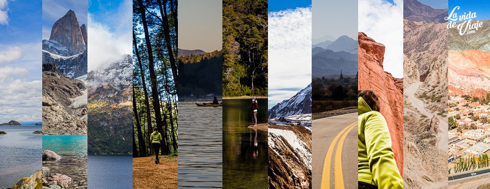

Esta pagina te ofrece los mejores lugares para visitar en Cordoba
A continuacion podras elegir tu destino favorito y obtener toda la informacion necesaria para tu viaje.

Seleccione el lugar donde desea viajar
El turismo en Córdoba es importante debido a su riqueza natural, patrimonial, cultural, gastronómica y religiosa. Córdoba ofrece una amplia variedad de atractivos y actividades para todo tipo de turistas, lo que lo convierte en un destino turístico atractivo tanto para los turistas nacionales como internacionales.